まつげとおひげと節分と [梅吉]
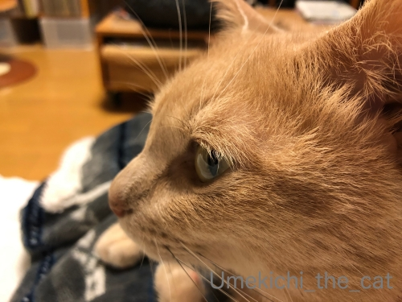
こてつくんのまつげは黒い、と知って軽く驚く。
そうですよねー。被毛の色によってまつげの色もそれぞれ。
梅吉のまつげは白っぽいです。
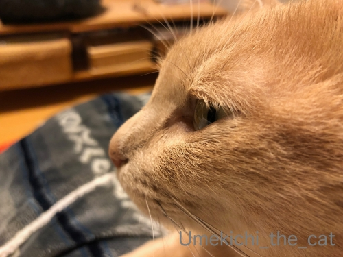
もう少し寄ってみよう。
白っぽくで結構長め、下向きに生えてます。村山富市さん、みたいじゃないですか？
（若い人にはわからんだろうな・・・・）
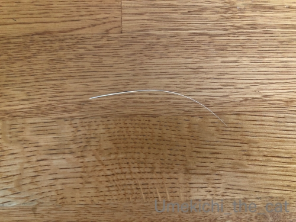
ここ１週間で立て続けに抜けたおひげを五本ほど発見しました。
家猫は一年中換毛期だと思いますがそろそろ更なる激しい換毛期がやってきているのでしょうか。
毛も抜けるんだからおひげも抜ける？
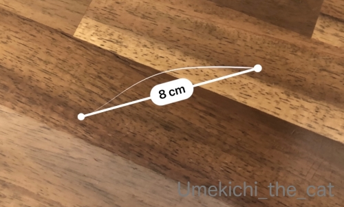
iPhoneの「計測」アプリで測ってみたら８センチ。
計測があまり正確ではない情報も耳にしたので定規で測ってみる。８センチでした。
ほかの抜けおひげも測ってみましたがやっぱり８センチ。
梅吉のおひげは「８センチで抜ける」周期？
（18秒 音は出ません）
我が家のおしゃれ番長w
鼻シワを寄せながら毛づくろいに精を出してました( ´艸｀)
やんちゃ線もくっきりだな・・・
 ↑ガブッと一押し↑
↑ガブッと一押し↑
２月３日節分の日。
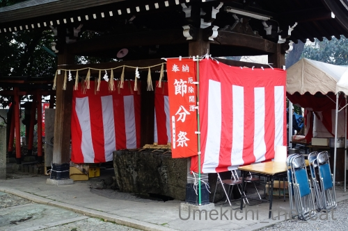
近所の神社に厄除けのお参りに行ってきました。
都合で朝早く行ったので今年は厄除けぜんざいはいただきませんでした。
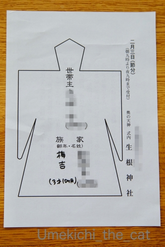
形代にはちゃんと梅吉の名前を書いて持って行きましたよー。
写真撮り忘れちゃったのでこれは去年の写真ですがw
（梅吉は現在４歳10ヶ月です）
この形代に息を三回吹きかけて、体を三回なぞって厄を写し神社でお祓いしていだたきます。
梅吉にはお鼻を三回つんつんしてもらいました。
厄除けは疫病除けでもあると思うので
ブログをご覧いただいている皆様の厄除けもしっかりお願いしてきましたよー。
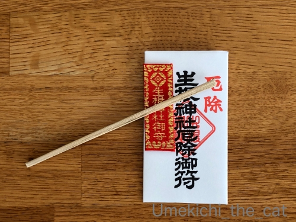
お札も新しいものを授与していただきました。
で、節分といったらやっぱりこれ、ですよねー0(≧▽≦)0
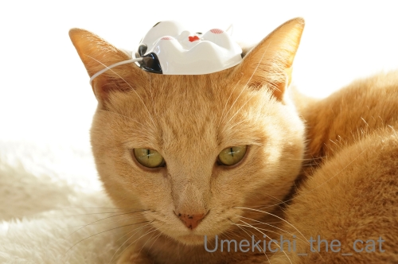
お多福さんはどうぞおうちにお入りください！
（あきらめの表情）
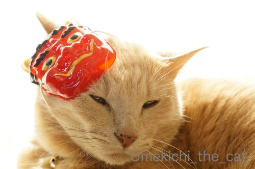
鬼さんは・・・可愛いのでやっぱりおうちにお入りください！！
（悟りの表情）
怖い鬼さんはおかーさんが追い払っておきます。
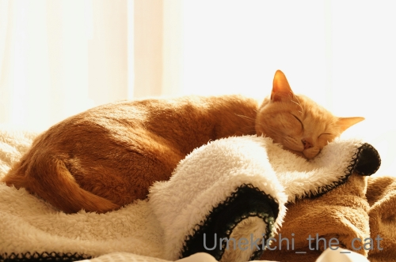
ご協力ありがとうございましたm(_ _)m
これで我が家は安心・安全なのでどうぞゆっくり朝寝をお楽しみくださいませ。。。
こてつくんのまつげは黒い、と知って軽く驚く。
そうですよねー。被毛の色によってまつげの色もそれぞれ。
梅吉のまつげは白っぽいです。
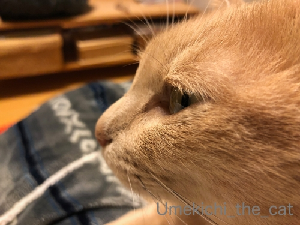
もう少し寄ってみよう。
白っぽくで結構長め、下向きに生えてます。村山富市さん、みたいじゃないですか？
（若い人にはわからんだろうな・・・・）
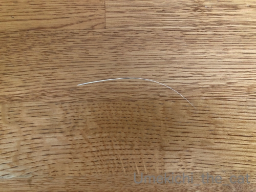
ここ１週間で立て続けに抜けたおひげを五本ほど発見しました。
家猫は一年中換毛期だと思いますがそろそろ更なる激しい換毛期がやってきているのでしょうか。
毛も抜けるんだからおひげも抜ける？
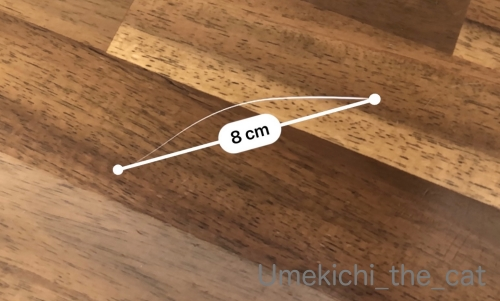
iPhoneの「計測」アプリで測ってみたら８センチ。
計測があまり正確ではない情報も耳にしたので定規で測ってみる。８センチでした。
ほかの抜けおひげも測ってみましたがやっぱり８センチ。
梅吉のおひげは「８センチで抜ける」周期？
（18秒 音は出ません）
我が家のおしゃれ番長w
鼻シワを寄せながら毛づくろいに精を出してました( ´艸｀)
やんちゃ線もくっきりだな・・・
２月３日節分の日。
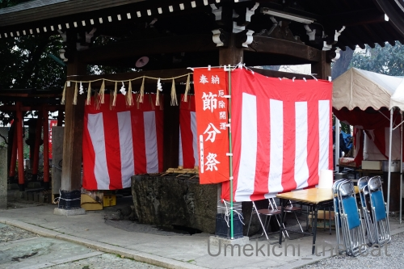
近所の神社に厄除けのお参りに行ってきました。
都合で朝早く行ったので今年は厄除けぜんざいはいただきませんでした。
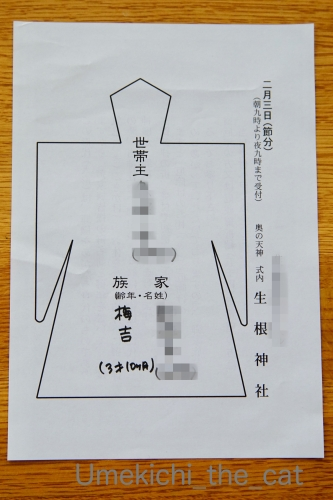
形代にはちゃんと梅吉の名前を書いて持って行きましたよー。
写真撮り忘れちゃったのでこれは去年の写真ですがw
（梅吉は現在４歳10ヶ月です）
この形代に息を三回吹きかけて、体を三回なぞって厄を写し神社でお祓いしていだたきます。
梅吉にはお鼻を三回つんつんしてもらいました。
厄除けは疫病除けでもあると思うので
ブログをご覧いただいている皆様の厄除けもしっかりお願いしてきましたよー。
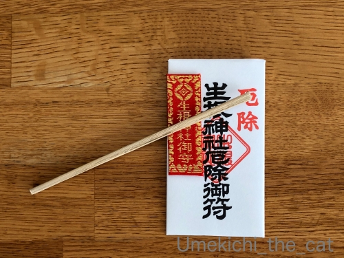
お札も新しいものを授与していただきました。
で、節分といったらやっぱりこれ、ですよねー0(≧▽≦)0
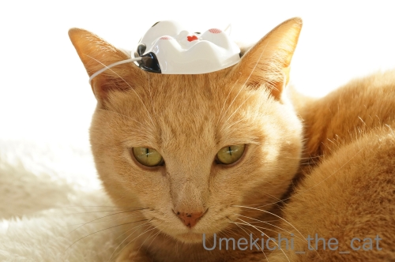
お多福さんはどうぞおうちにお入りください！
（あきらめの表情）
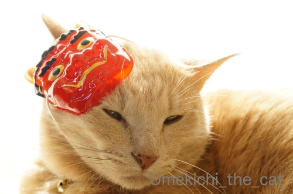
鬼さんは・・・可愛いのでやっぱりおうちにお入りください！！
（悟りの表情）
怖い鬼さんはおかーさんが追い払っておきます。
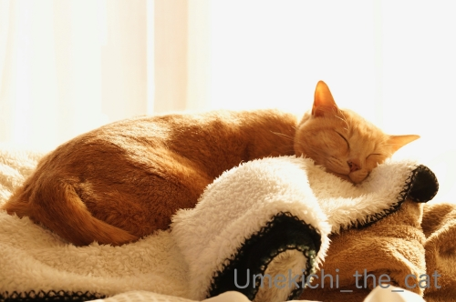
ご協力ありがとうございましたm(_ _)m
これで我が家は安心・安全なのでどうぞゆっくり朝寝をお楽しみくださいませ。。。

カフェオレ色の梅吉

梅吉 2023年8月10日 永眠


梅吉と出会った譲渡会

犬猫の理由なき殺処分ゼロ
妄想広告
UMEKICHI 光

爆発的に早い！
時々攻撃的！
Thanks to Mr.Boss365
爆発的に早い！
時々攻撃的！
Thanks to Mr.Boss365

たしかに懐かしい村山富市さん＼(^o^)／
あの眉毛は今でも鮮明に思い出します。
毛づくろい動画は最後に「何見てんの？」って顔してますね(笑)
そして厄除け祈願ありがとうございます。
これで流行りの疫病も退治してくれるでしょう♪
鬼さんの梅吉さんとってもかわいいです(^^♪
by yamatonosuke (2020-02-06 01:30)
猫のまつ毛ってどこからがまつ毛なのか分かりません。老眼のせいかウチの子達にはまつ毛がないように見えます。梅吉さんはびっしり生えてますね。お面を乗せても動じてないし偉いです~。
by zombiekong (2020-02-06 01:43)
村山さんは眉毛がビッシリでしたね。
うちの子たちのお髭は、
根元が黒くて先が白いツートーンタイプが多いです＾＾
by ぽちの輔 (2020-02-06 06:44)
村山富市さんですね。確か連立政権で総理やった記憶があります。
by ニコニコファイト (2020-02-06 06:59)
梅吉さんの凛々しい横顔が素敵( ^ω^ )
村山さん、懐かしいですw
梅吉さんのお髭は８cmなんですね=(^.^)=
うちのニャンズのひげは何cmなんだろう？
今度見つけたら、アプリは使えないので物差しで計ってみます(⌒-⌒; )
by ニッキー (2020-02-06 07:11)
私、梅吉さんと同じく、まつげが少し下向きです(^^;)
村山富市さんにはなってないけど(笑)
8㎝周期発見！リュカさんちのあおくんのように記録は狙えませんねぇ～。
ひげは体の大きさを測るとも言われているから梅吉さん、意外と小柄?!
節分のお福と鬼のお面もイヤイヤながらとはいえ、お似合いでございます。
by ChatBleu (2020-02-06 07:49)
村山富市さんみたいだニャ
SSブログには若い人は居ないと思うので皆判ると思いますが（ﾟ□ﾟ）
お面も似合ってるニャ～
by 英ちゃん (2020-02-06 09:17)
梅吉さんの睫毛びっしりで、羨ましい！（笑）
毛づくろいの動画、急いでイヤホンをつけながら『音は出ません』にそれでも耳にイヤホンを押し込んで、観ました。
高齢者の男性は眉毛が伸びます。
眉毛を落とす力がないからだそうです。
で、夫も放っておくと、眉が長くなるので、
手入れをしてやります。
神妙な顔で目をつむって、
されるがままです（笑）
娘と１度は『麻呂眉』にしてやりたいと
話してますが、まだ実行できていません（笑）
by kiki (2020-02-06 09:42)
村山さんのまつげは印象的でしたね。梅吉さんの白いまつげも立派です!
猫議会では総理大臣になるかも(^^)
うちにいた猫たちの写真を見てまつげを点検したくなりました。
by kou (2020-02-06 09:47)
梅吉くんのまつげは白っぽいんだね。
うつむきかげんのまつげがいじらしいわ^^
そしてやんちゃ線、見えてるよぉー！
ダークな色の子は見えやすいけど、動画でちゃんと見えました^^
おひげ、8cmで抜けますか〜
もうちょっと頑張るのだ！梅吉くんのおひげ！
あおは現在、推定12cmがまだ抜けずにおります。これ以上伸びるのは厳しいかなあ？？？
厄除けのお参りも完璧ですね。
これでまた１年大丈夫！
by リュカ (2020-02-06 10:00)
こてつさんのは上を向いていましたが、梅吉さんのまつ毛は下に向いてますね。
横顔のアップのショットでないとまつ毛をなかなか確認できませんね。
タルちゃんもNaoちゃんも多分黒いです。
私の観察によればお鼻の色と肉球の色は同じな気がします。
うちはふたりとも黒というか濃いあずき色です。
厄除け、須磨区の多井畑厄神で数年前に厄除けのために参拝し
このような形代に住所、氏名を書いて専用の水瓶？に浮かべてきました。
ちゃんと毎年同じところで厄除け参りをされるのですね(^^
村山とんちゃんの眉毛はびよ～んと長くてトレードマークでしたね。
by marimo (2020-02-06 10:06)
髭も抜けるのですね!
厄払いは川崎大師で行ってきました(^^)
by ma2ma2 (2020-02-06 10:18)
こんにちは。
「梅吉のまつげは白っぽい」は面白いですね。老化ではない感じですね。
村山富市さん？よく知らないですが・・・眉毛かな？（笑）
計測アプリ！！ナイスです。「８センチで抜ける」は学術論文にしたいです（笑）
小生猫の「やんちゃ線」を探しているのですが、現在まで見つかっていないです。
あお君など・・・オス猫に出やすい可能性ありです。
厄除け「形代」梅吉の名前発見、ちぃさん、偉いです！！
「皆様の厄除け・・・」ありがとうです。感謝です。
梅吉君の「悟りの表情」無気力なつり目？に癒されます（笑）
梅吉君も安定の「朝寝」これまた至福な癒し効果ありです！？(=^･ｪ･^=)
by Boss365 (2020-02-06 12:05)
梅吉さん、まつげビッシリで羨ましい～！
伏し目がちな感じが思慮深い哲学者のようです^^
私、ほんとまつげが疎らでヘタにマスカラつけると3本ぐらいに固まっちゃうので使えません(≧▽≦)
ヒゲは8cmで抜ける、ネイチャーに論文発表できそうです^^
私もこてつの抜けヒゲ集めているので一度測定してみます♪
福梅吉さんも鬼梅吉さんも穏やかなよい表情ですね～。
同じお面なのにウチでやると阿鼻叫喚の地獄絵図になるのはなぜなんだろう・・・( ;∀;)
by ゆきち (2020-02-06 12:48)
うん、立派なまつ毛だ！
らいむも白い・・・かな？
おひげは娘が「抜けたのを置いておく」というので
気が付いたら保管してますが
まつ毛は意識したことなかったなぁ
by 藤並 香衣 (2020-02-06 18:37)
梅吉さんのおひげは白いのですね。
ウチの猫のひげは黒いので、床に抜け落ちていると「すわっ！”G”のヒゲか！！」と焦ることがありました。^^;
厄除けありがとうございます～。
by yes_hama (2020-02-06 21:44)
村山富市さん！
なんとまあ、懐かしの名前がー(≧∀≦)
by よーちゃん (2020-02-07 07:16)
うちも毛色から考えてまつげは白っぽいと思います。
（たぶん合ってるｗ）
抜けたおひげは宝箱に集めているんです(ΦωΦ)ふふふ
でもあまり溜まっていないですね＾＾
やんちゃ線、うちもあるのかしらー。じっくり見てみますｗｗ
厄除けに梅ちゃんのお名前もしっかり！ブロ友さんの分まで
ありがとうございます(*･ω･)*_ _)
梅ちゃんもしっかり節分のお役目をこなして朝寝ですね♪
鬼さんは招いちゃダメよーーっ(((*≧艸≦)ﾌﾟﾌﾟｯ
お疲れさまでしたっ(*＾-ﾟ)v
by カトリーヌ (2020-02-07 16:43)
あっ、そうですね、まつ毛は体毛の色ですよね〜
気になったので、ウチの白黒たちのまつ毛を見たら、
目のまわりが黒い子は、黒。白い子は、白。なるほどね(^0^;)
by のらん (2020-02-08 11:03)
ナノで確認しようとしましたが黒に黒で何が何だか・・・(;^ω^)
きなこ・・・じっとしません。いまだまつげ確認できず
by palpal (2020-02-09 09:20)
体毛（目の周り？）の色で違うのですね。
by サンダーソニア (2020-02-09 20:41)
梅吉さん、すっきりフェイスなのに、じつは目元はふさふさなんですね。
やさしげな表情が可愛い^^
お手入れも完ぺきにね^^
きちんと厄除けなさるんですね！
素敵な習慣ですねえ。
ブログ仲間の分まで、ありがとうございます。
これで今年は大丈夫^^
by sana (2020-02-09 23:35)